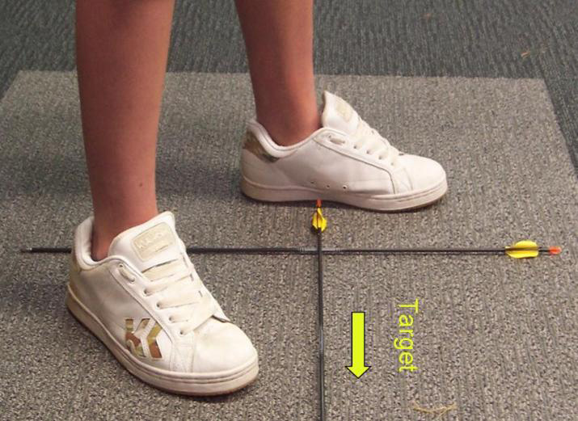
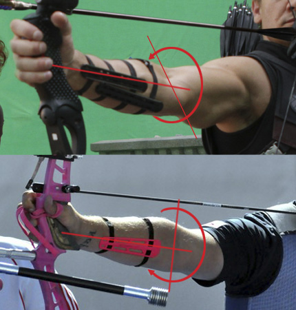
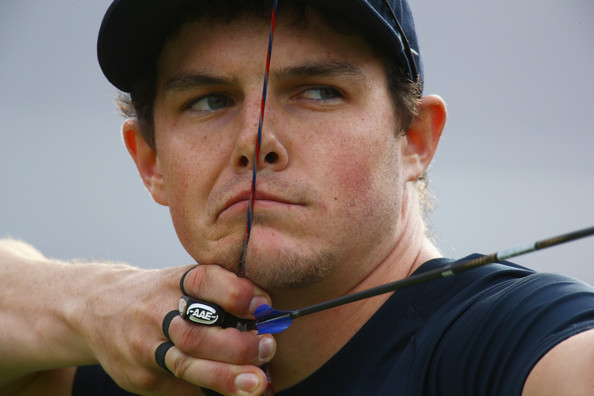
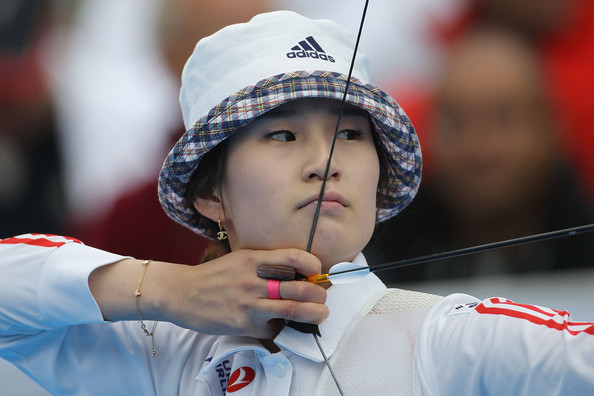
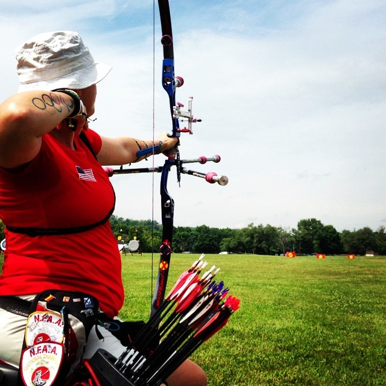

5 Common Archery Mistakes
If you’ve ever been to an archery class, you’ve probably heard someone ask, “Why aren’t my arrows hitting the middle?” Though every shot is a learning opportunity, it’s still a great feeling to hit a bull’s-eye, and it’s OK to want to hit the middle every time!
For arrows that don’t get #extramiddle, we’ll review five common archery mistakes that recurve archers face – and some ways to correct them.
INCONSISTENT STANCE

Do your feet change position slightly from shot to shot? Your stance – where you place your feet when shooting – is the foundation for your shot. Your stance must be solid and consistent arrow to arrow.
To ensure a consistent stance, apply painter’s tape on the floor where you practice. If you use an open stance, for example, place the tape so your foot alignment and toe position will be identical for each shot.
Remember, your stance not only affects foot position, but also your balance and center of gravity. By making your foundation solid, you ensure a more stable platform for strong shots.
ELBOW ROTATION

Correct elbow rotation is one of archery’s simplest, but most important, skills. This means keeping your bow arm’s elbow rotated straight up and down while drawing the bow and releasing the arrow.
If your bow arm’s elbow doesn’t rotate straight, many problems can result, including a bruised inner elbow and arrows veering to one side of the target. To prevent problems, rotate your elbow straight before raising or drawing your bow.
By setting the bow arm elbow correctly from the start, and maintaining its position during the shot, your upper body will be properly aligned, which results in a stronger shot and better arrow groups in the target.
HOOK (FINGER POSITION ON THE BOWSTRING)

When you place your fingers on the bowstring, do you actually look where you’re placing them? Or do you simply grasp the bowstring and start drawing? Rushing to place your fingers on the string is one of the most common archery mistakes. Taking a second look at your finger placement can pay big dividends for your shot.
Hooking the bowstring with too much finger tension – or in the wrong place on the fingers – can cause many issues. The problems range from missing the target entirely to developing painful finger blisters.
Therefore, make sure you place your fingers on the string for each shot exactly as you were taught, and be sure your hand position relative to the bowstring is consistent. Hooking properly and consistently creates tighter groups!
ANCHOR POINT

For beginning archers, anchoring consistently can be a challenge. The anchor point is a spot on your face – usually the corner of your mouth or just below your chin – where you pull the bowstring every time.
To understand the importance of a consistent anchor point, consider what an anchor does for a boat: It keeps the boat from moving. Likewise, an anchor point prevents archers from placing their draw-hand in different spots each time they shoot, which would send your arrows flying in different directions.
You can determine your anchor point with your instructor’s guidance. The most important part is drawing the bowstring to the same anchor point every single arrow. If you feel it changing, work with your coach on techniques to become more consistent.
STRONG SHOTS

A common mistake made by many archers is failing to finish the shot with strength. Aiming too soon often causes weak shots. Another culprit is focusing so much on aiming that you forget to focus on the proper muscle movements.
Weak shots can cause low shots and side-to-side groupings, depending on whether the archer is right- or left-handed. Fortunately, weak shots are easily fixed: Just change your focus.
When you’re at full draw and ready to aim, stay focused on the muscle movements your coach taught you. Aiming is important, but it’s equally important to use your muscles to create a strong release and follow-through. By focusing on the right technique at the right time, your shots will be stronger and your groups tighter and more consistent.
Convinced your technical game is on point, but not so sure about your mental game? Learn how to daydream your way to higher archery scores.
#Article from Archery 360 Magazine